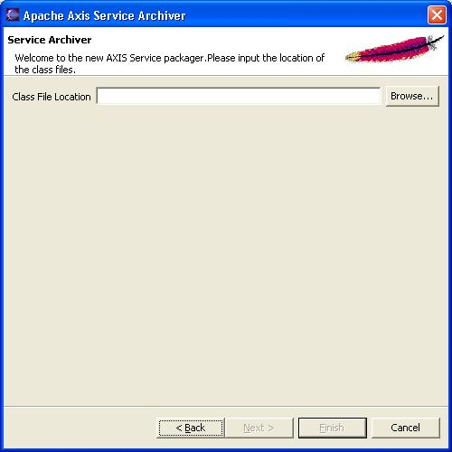
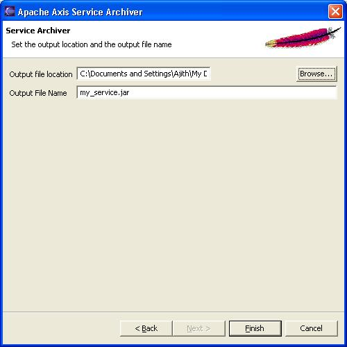

Axis2 comes with a simple service archiver tool. This tool is in the form of an Eclipse plug-in and can be downloaded from the downloads section. The following sections describe how the tool can be used.
Download the binary version of the plug-in and extract the content of the zip file into the Eclipse installation folder. (The plug-in will actually go into the plugins directory in the Eclipse installation root). Restart Eclipse to set the plug-in automatically.
If the plug-in is properly installed you should see a new wizard under the "New" section.(use the File -> New -> Other or Ctrl + N )
Selecting the wizard and pressing the next button will start the code generator wizard. Following is the first wizard page.

Once the class file location is given (which should be a folder in the file system) the next button will be enabled. Page 2 of the wizard requires you to locate the server.xml

Note that the automatic generation of the service.xml is disabled for this release. After the service.xml is located you can point to the output location and specify the file name.

Once all the parameters are filled, finishing the wizard will generate the service archive.